Como a empresa opera entregas, estoque e vidas
Este manual descreve o Painel do Cliente (/portal), a superficie
do dia a dia da empresa. A Consultoria usa outro login e outro menu.
Os prints sao reais, capturados no piloto da Bragametal (InSeg) em 05/08/2026.
Clique na imagem para abrir em tamanho cheio.
1. Acesso e papéis
Ha duas portas. Nao misturar.
| Superficie | URL | Quem usa | Para que |
|---|---|---|---|
| Consultoria | /login |
InSeg / implantacao | Cliente, PGRO, estrutura, CAEPI, catalogo, usuarios do portal |
| Painel do Cliente | /portal/login |
Gestor ou operador da empresa | Estoque, vidas, entrega facial, relatorios, ficha |
Papeis no portal
| Papel | Faz |
|---|---|
| Gestor do cliente | Opera o painel completo da empresa (estoque, trabalhadores, entregas, relatorios). |
| Operador de estoque | Mesmo acesso operacional no piloto (estoque e entregas no dia a dia). |
2. Login, senha e conta
- Abra o endereco do ProntEPI e va em Portal do cliente ou direto em
/portal/login. - Informe e-mail e senha cadastrados.
- Se aparecer “troque a senha temporaria”, va em Minha conta.
- Esqueceu a senha? Use Esqueci a senha (
/esqueci-senha?origem=portal). No piloto, a senha temporaria pode aparecer na tela se o envio automatico estiver desligado.
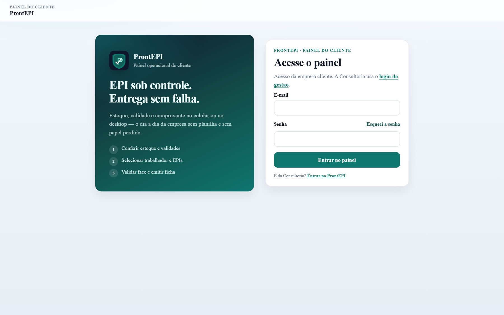
Minha conta
Mostra nome, e-mail e papel. Permite trocar senha (atual + nova + confirmacao, minimo 8 caracteres).
3. Painel inicial
Apos o login, o usuario ve a empresa (nome + CNPJ), atalhos do dia, resumo de vidas/setores/funcoes e o bloco Precisa de atencao.
No piloto Bragametal (05/08/2026): 2/20 vidas, 4 setores, 6 funcoes, 4 trocas vencidas, 1 CA vencido, 1 trabalhador sem face, 0 entregas nos ultimos 7 dias.
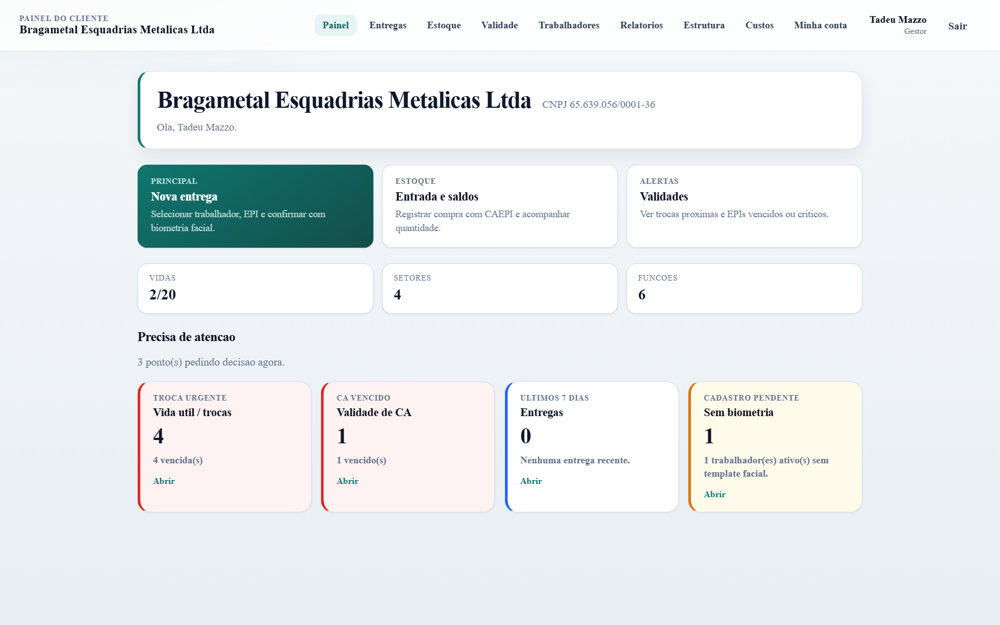
4. Estoque
O estoque operacional e da empresa, nao da Consultoria. Duas abas: Entrada e Saldos.
- Abra Estoque.
- Na aba Entrada, escolha a necessidade (ex.: Capacete) ou busque um EPI livre na base CAEPI.
- Selecione o certificado correto (nome do equipamento deve combinar com a necessidade).
- Informe a quantidade e confirme. O sistema vincula ao catalogo automaticamente.
- Va em Saldos para conferir unidades por local.
No piloto: 8 necessidades, 13 linhas em saldo, 68 unidades no Estoque principal. Ha CA vencido em estoque (Protetor facial CA 44809, 20/09/2025).
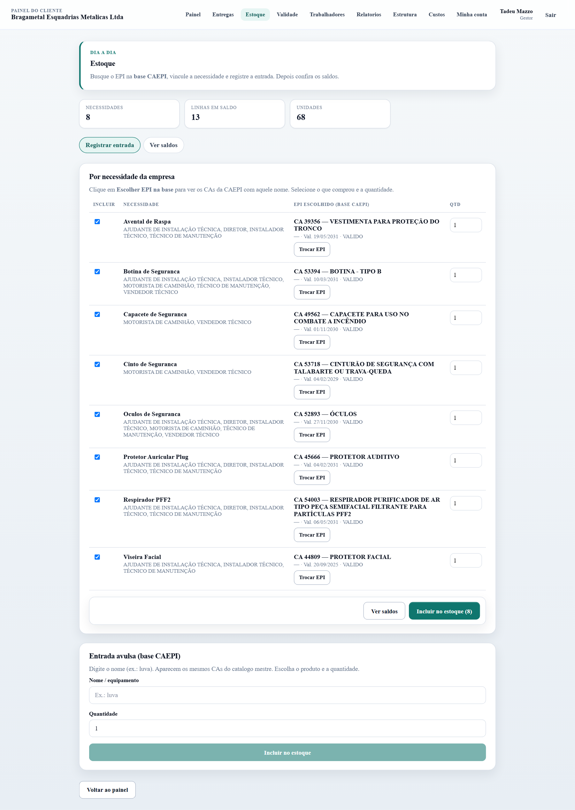
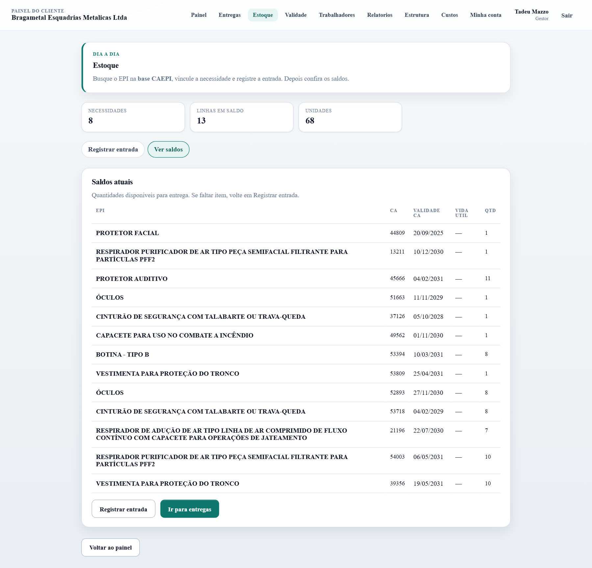
5. Trabalhadores
A empresa cadastra e mantem as vidas sem depender da Consultoria.
Individual
- Novo trabalhador: nome (obrigatorio), CPF, matricula, unidade, setor, funcao, admissao, observacoes.
- Se a estrutura existir, setor e funcao sao obrigatorios (os EPIs da funcao vêm daí).
- Editar, Ativar/Inativar (inativar libera cota de vida).
- Status de face: Face ok / Sem face / Recadastrar face.
Planilha CSV
- Clique em Importar CSV.
- Baixar modelo CSV e preencher (unidade, setor e funcao ja existentes na estrutura).
- Enviar o arquivo, revisar a previa (linhas validas, erros, impacto na cota) e confirmar.
Ficha de EPI
Em cada trabalhador: Ficha de EPI (historico / em aberto). Imprimivel.
No piloto: Joao Souza (MAT-002, motorista, Face ok, 4 EPIs vencidos) e Maria Silva (MAT-001, instalador tecnico, Sem face).
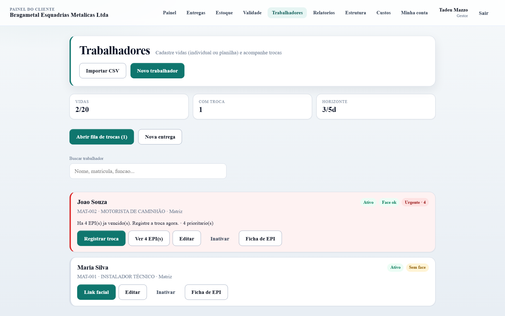
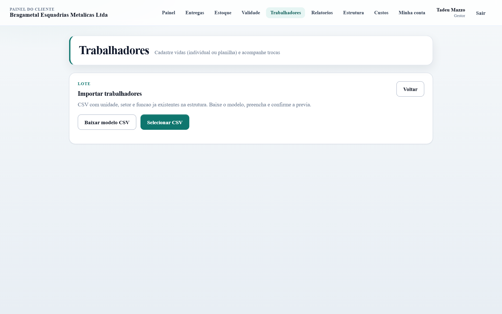
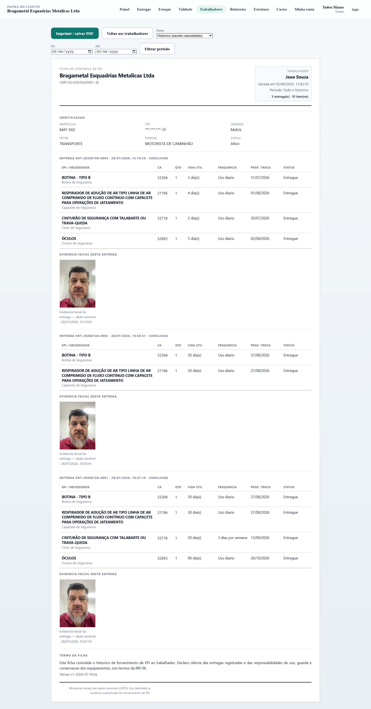
6. Cadastro facial (link publico)
- No trabalhador sem face, clique em Link facial. Exige CPF (pelo menos 4 digitos finais).
- Copie o link (valido 24h) e envie ao trabalhador (WhatsApp, etc.).
- No celular, o trabalhador abre o link, informa os 4 ultimos digitos do CPF, aceita o termo LGPD e posiciona o rosto no oval.
- A captura e automatica quando o enquadramento esta ok. Nao precisa login no portal.
7. Entregas e comprovante
Fluxo principal do piloto: Trabalhador → EPIs → Biometria.
- Abra Entregas → inicie uma nova (ou use “Registrar troca” no trabalhador).
- Selecione o trabalhador ativo com funcao.
- Marque as necessidades/EPIs disponiveis no estoque. Sem estoque ou sem EPI vinculado, a linha fica bloqueada.
- Na etapa Biometria, capture a face. O sistema compara com o template cadastrado.
- Confirme a declaracao NR-06. A entrega baixa o estoque e gera recibo.
- Abra o comprovante (
/portal/entregas/[id]) e use Imprimir / PDF.

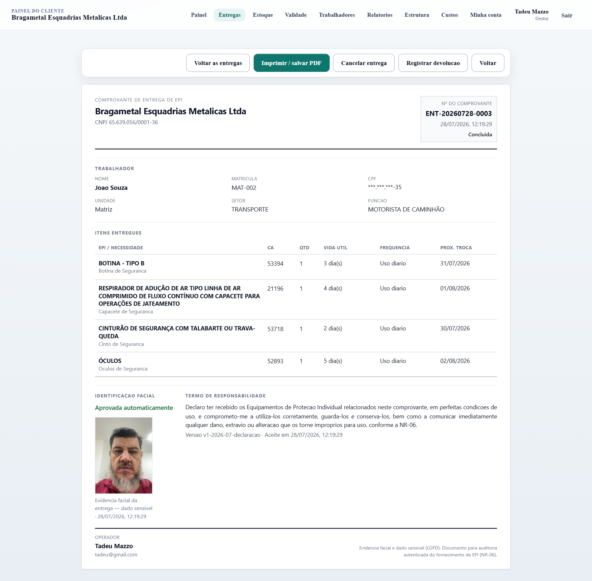
Problemas comuns na entrega
| Situacao | O que fazer |
|---|---|
| Sem face / recadastrar | Gerar link facial e so depois entregar. |
| Sem estoque | Registrar entrada no Estoque com CA correto. |
| Sem EPI real vinculado | Entrada de estoque na necessidade da funcao. |
| Face nao bate | Melhor iluminacao, tirar oculos escuros, tentar de novo. Se persistir, recadastro. |
| Trabalhador inativo | Ativar em Trabalhadores (se houver cota). |
8. Validade
Lista CAs e vinculos: Vencido, A vencer (horizonte ~90 dias), Sem CA, Em dia. O filtro abre no bucket mais critico.
No piloto: 1 vencido (Protetor facial CA 44809, 20/09/2025), 0 a vencer, 0 sem CA, 12 em dia.
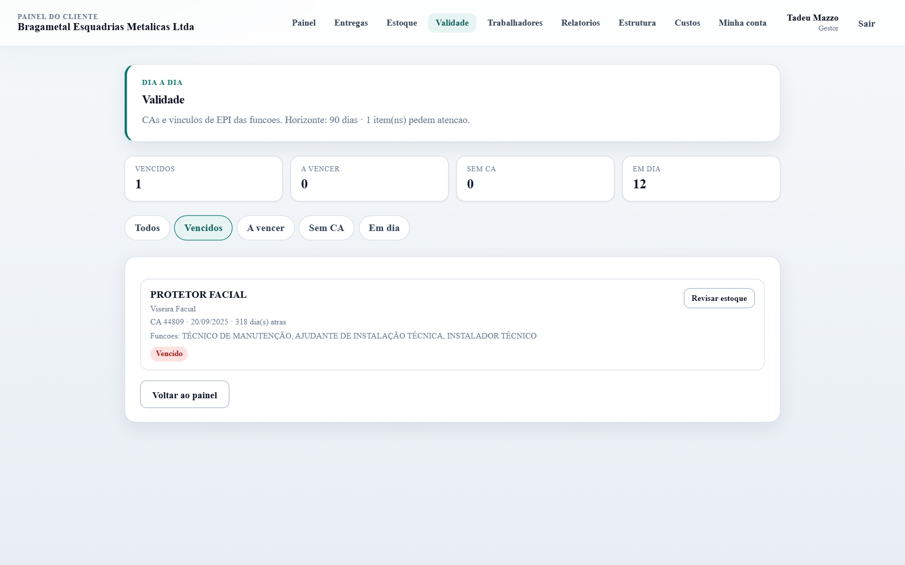
9. Relatorios
Somente leitura. Filtros de periodo, trabalhador, unidade, setor e funcao.
| Aba | Conteudo |
|---|---|
| Visao geral | Entregas, itens, devolucoes, cancelamentos, gaps de cobertura/estoque. |
| Trocas | Fila de EPI vencido / critico / alerta, com atalho para trocar. |
| Entregas | Lista com recibo, facial e comprovante. |
| Atividade | Ranking por trabalhador e por setor. |
| Estoque | Saldos OK / baixo / zerado. |
| Devolucoes | Devolucoes e cancelamentos. |
| Cobertura | Necessidade × estoque por funcao. |
Exportar CSV baixa a aba ativa. Imprimir gera folha limpa (sem menu/filtros).
No piloto (periodo ~30 dias ate 05/08/2026): 3 entregas, 10 itens, 0 devolucoes/cancelamentos, 2 trabalhadores ativos, sem gaps de cobertura/estoque.
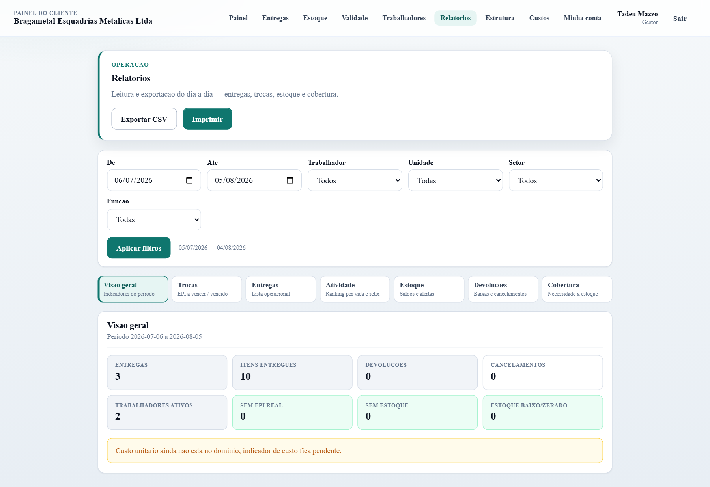
10. Estrutura e custos
Estrutura e somente leitura: setores, funcoes, riscos e necessidades implantados pela Consultoria (PGRO). O cliente nao edita PGRO pelo portal.
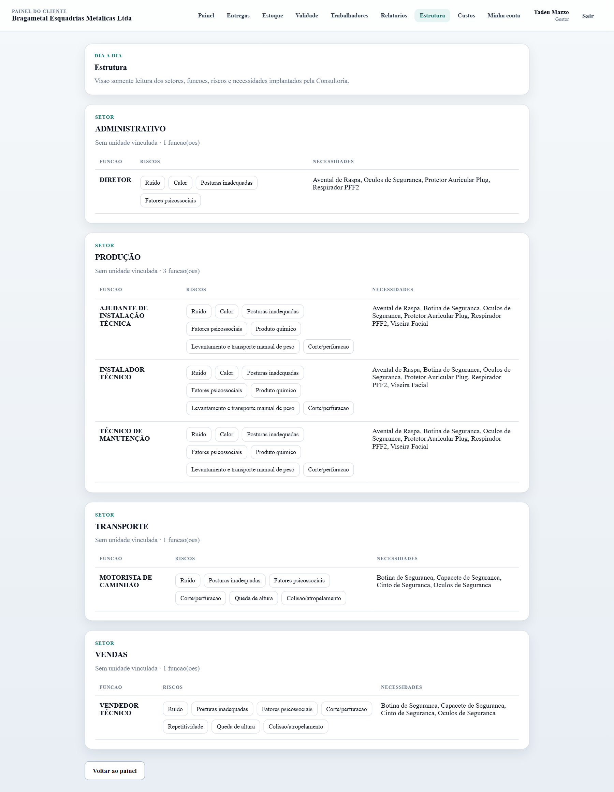
Custos: tela placeholder (“em breve”) ate haver preco por item/lote. Nao ha indicadores financeiros no piloto.
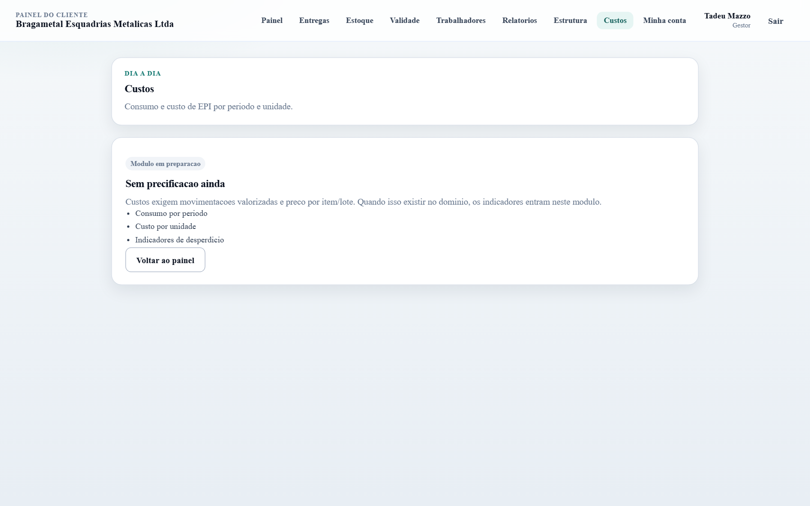
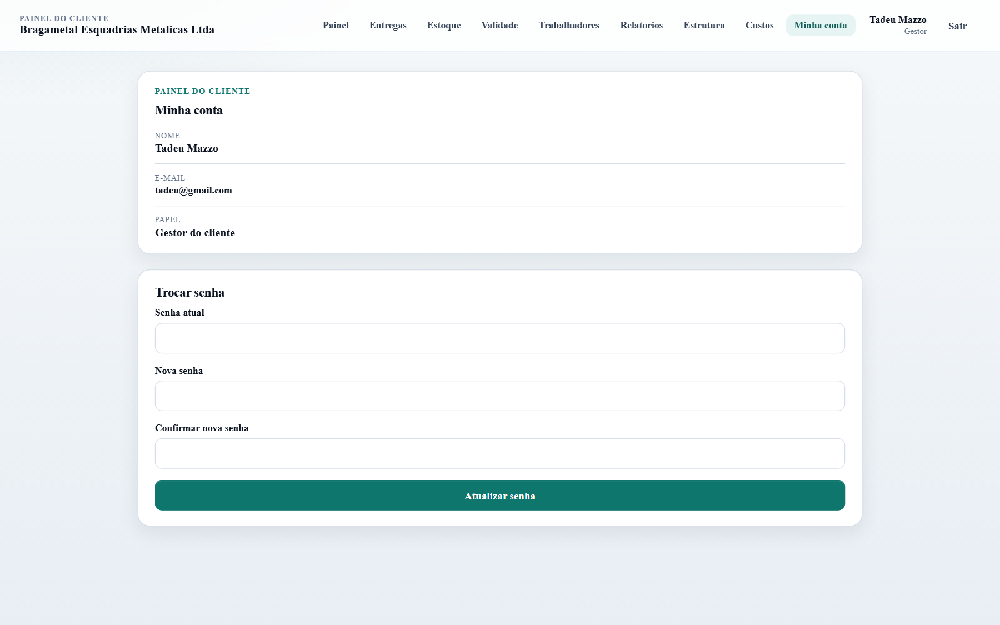
11. Uso no celular
- O portal e mobile-first: menu inferior (Painel, Entregas, Estoque, Relatorios, Mais).
- Entrega e cadastro facial funcionam melhor em HTTPS, camera frontal, boa luz.
- Impressao de comprovante/ficha: use “Imprimir” do navegador (salvar PDF).

12. O que o portal nao faz
| Pedido | Onde resolver |
|---|---|
| Criar empresa / CNPJ / cota de vidas | Consultoria |
| Importar ou alterar PGRO / estrutura | Consultoria |
| Base CAEPI (atualizar certificados) | Consultoria |
| Catalogo mestre de EPIs da organizacao | Consultoria → EPIs |
| Criar usuario do portal | Consultoria → Usuarios do cliente |
| Revogar biometria / LGPD retencao | Consultoria |
| Precificacao e custos | Ainda nao disponivel |